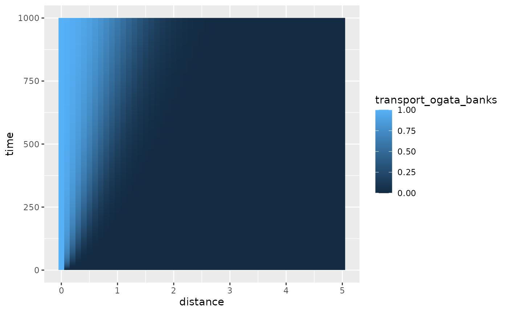

transport
transport.Rmd
library(hydrorecipes)
#> Loading required package: Bessel
library(ggplot2)
library(viridisLite)
library(data.table)Sudicky and Frind 1982 dual fractures (solute)
dat <- expand.grid(seq(0, 0.2, 0.001), seq(0, 0.002, 0.0001), 10^seq(0, 6, 1))
dat <- collapse::qDT(dat)
names(dat) <- c("distance_fracture", "distance_matrix", "time")
cra_sol <- recipe(time~., dat) |>
step_transport_fractures_solute(time = time,
distance_fracture = distance_fracture,
distance_matrix = distance_matrix) |>
plate()
ggplot(cra_sol, aes(x = distance_fracture, y = distance_matrix)) +
geom_raster(aes(fill = transport_fractures_solute)) +
facet_wrap(time ~.)
Seven heatmaps of solute concentration for times ranging from 1 to 1 million seconds. The distance into the matrix is on the y axis and the distance along the fracture is along the x-axis. Inital concentrations are mostly zero and get larger with time progressing into the matrix and along the fracture.
Sudicky and Frind 1982 dual fractures (modified for heat)
cra_heat <- recipe(time~., dat) |>
step_transport_fractures_heat(time = time,
distance_fracture = distance_fracture,
distance_matrix = distance_matrix) |>
plate()
ggplot(cra_heat, aes(x = distance_fracture, y = distance_matrix)) +
geom_raster(aes(fill = transport_fractures_heat)) +
facet_wrap(time ~.)
Seven heatmaps of temperature for times ranging from 1 to 1 million seconds. The distance into the matrix is on the y axis and the distance along the fracture is along the x-axis. Inital temperature is 10 degrees and rises with time progressing further into the matrix and along the fracture.
Ogata and Banks 1962 1-D transport with decay and retardation
distance (vector) time (vector)
dat <- expand.grid(seq(0, 5, 0.1), 1:1000)
dat <- collapse::qDT(dat)
setnames(dat, c("distance", "time"))
ob <- recipe(x~., data = dat) |>
step_transport_ogata_banks(time = time,
distance = distance,
concentration_initial = 1.0,
velocity = 0.005,
diffusion = 1e-3,
retardation = 1.0,
decay = 0.0) |>
plate()
ggplot(ob, aes(x = distance, y = time)) +
geom_raster(aes(fill = transport_ogata_banks))
Heatmaps of concentration as a function of distance from a constant source and time. Concentrations increase with increasing time and decreasing distance.
dat <- expand.grid(seq(0, 5, 0.1), 1:1000)
dat <- collapse::qDT(dat)
setnames(dat, c("distance", "time"))
ob <- recipe(x~., data = dat) |>
step_transport_ogata_banks(time = time,
distance = distance,
concentration_initial = 1.0,
velocity = 0.005,
diffusion = 1e-3,
retardation = 5.0,
decay = 0.0) |>
plate()
ggplot(ob, aes(x = distance, y = time)) +
geom_raster(aes(fill = transport_ogata_banks))
Heatmaps of concentration as a function of distance from a constant source and time. Concentrations increase with increasing time and decreasing distance. This scenario has a retardation set to 5, and the solute does not travel as far as the previous figure where retardation was set to 1.